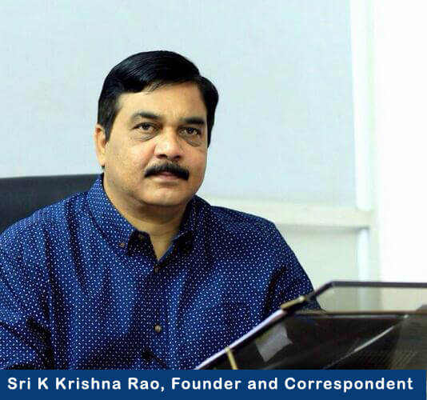

At this moment, I would like to quote a famous saying by Albert Einstein: "Wisdom is not a product of schooling but of the lifelong attempt to acquire it.
Technical Education in Telangana is passing through one of the most critical periods. Rapidly changing technological environment at global level and ever developing demands of the students pose a two fold problem to the institutions : i) Anticipating the thrust areas of the future ii) Equipping the institutions with necessary infrastructure and trained faculty in consonance with ever changing demands The fact that Indur Institute of Engineering and Technology has been selected for the establishment of Jawahar Knowledge Center by the Government of Andhra Pradesh in the very first phase, reflects the non-compromising attitude of the management towards infrastructure building. Further, at Indur, we have a well-evolved scientific mechanism to assess the capabilities and the problem areas of the individual students so that each student could be properly counseled. A special team of professors at Indur have been given the responsibility of closely following the industry and their requirements, and asses the changes that are likely to take place in near future. The idea is to enhance the student's preparedness to meet the requirements of market once he finishes the course.
The college has realized that effective technical training apart, enhancement of communication skills and soft skills is a very important tool which gives students confidence to face group discussions and interviews. The college has a placement cell which constantly coordinates with the giants in the IT industry to ensure placements for the students of Indur.
This is indeed a challenging task. Understanding this imperative, at Indur, we always lay emphasis on infrastructure building and recruitment of talented resource persons to meet the requirements of curriculum and the demands of the IT industry.